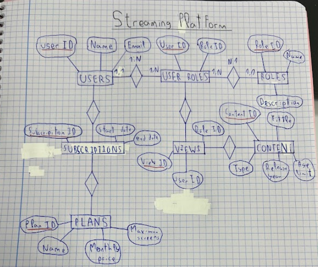
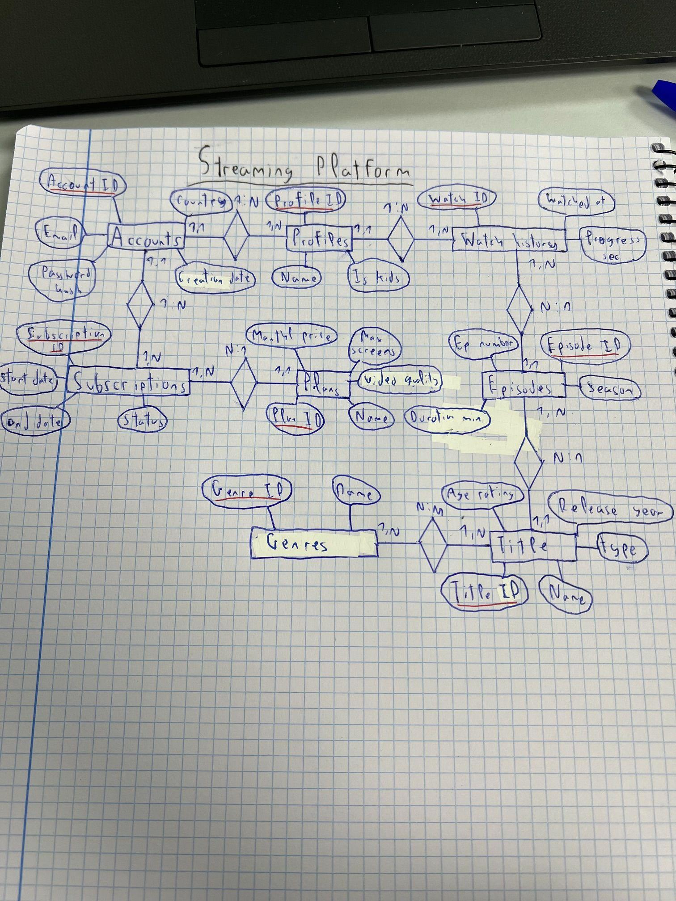

Streaming Plataformaren Datu-Eredua
Ikus-entzunezkoen zerbitzu baterako datu-base erlazionalaren diseinua: bi E-R proposamenen analisia, Accounts/Profiles behin betiko eredua, 3NF normalizazioa eta Access inplementazioa.
1. Beharren Azterketa eta DBKG baten Abantailak
Plataformak kontu nagusiak (Accounts), profil anitzak (Profiles), planak, edukiak eta ikustaldiak kudeatzen ditu.
| Ezaugarria | Kalkulu-orria (Fitxategi laua) | DBKG Erlazionala |
|---|---|---|
| Erredundantzia | Datuak behin eta berriz errepikatzen dira | Taula independenteak gakoekin lotuta |
| Osotasuna | Erregistro umezurtzak sor daitezke | Kanpoko Gakoek (FK) osotasuna bermatzen dute |
| Aldiberekotasuna | Fitxategia blokeatu egiten da idaztean | Milaka erabiltzailek aldi berean sar daitezke |
2. Entitate-Erlazio (E-R) Proposamenak
1. Proposamena: Orokorra (Baztertua)
Users, Roles, User_Roles, Subscriptions, Plans, Content, Views.

1. irudia: 1. Proposamena (Baztertua) - Ez du baimentzen profil anitzik kontu berean.
2. Proposamena: Banatua (Hautatua)
Accounts, Profiles, Plans, Subscriptions, Titles, Episodes, Genres, Watch_History.

2. irudia: 2. Proposamena (Hautatua) - Kontuak eta profilak (Is_Kids) bereizita.
3. Eredu Erlazionala eta 3NF Normalizazioa
| Taula | PK (Lehen Mailakoa) | FK (Kanpokoa) | Beste Eremuak |
|---|---|---|---|
| Accounts | PK Account_ID | - | Email, Password_Hash, Country, Created_At |
| Profiles | PK Profile_ID | FK Account_ID | Name, Is_Kids |
| Plans | PK Plan_ID | - | Name, Monthly_Price, Max_Screens, Video_Quality |
| Subscriptions | PK Subscription_ID | FK Account_ID, Plan_ID | Start_Date, End_Date, Status |
| Titles | PK Title_ID | - | Name, Type, Release_Year, Age_Rating |
| Episodes | PK Episode_ID | FK Title_ID | Season, Ep_Number, Duration_Min |
| Genres | PK Genre_ID | - | Name |
| Title_Genres | PK Title_ID, Genre_ID | FK Title_ID, Genre_ID | N:M Erlazioa (Erlazio taula) |
| Watch_History | PK Watch_ID | FK Profile_ID, Episode_ID | Watched_At, Progress_Sec |
3NF Normalizazioa: Eremu guztiak atomikoak dira (1NF), dependentzia osoa dute PK-rekiko (2NF) eta dependentzia iragankor guztiak kendu dira (3NF).
4. Access Inplementazioa eta Eragiketa Hurrenkera
Txertaketa Hurrenkera (Gurasotik Semera):
- Plans, Genres eta Accounts (Guraso nagusiak)
- Titles, Subscriptions eta Profiles
- Episodes eta Title_Genres
- Watch_History (Azkena, menpeko erregistro guztiekin)
Ezabatze Hurrenkera (Semetik Gurasora):
- Watch_History (Seme-erregistroak lehenik)
- Title_Genres eta Episodes
- Profiles eta Subscriptions
- Titles, Plans, Genres eta Accounts